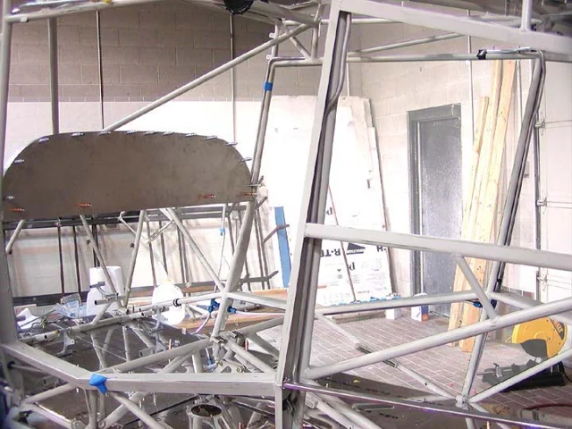

View photo ↗MODEL UNKNOWNLEGACY
Uncredited factory-manual example
Door-post line before interior closure
The uncovered cabin side makes the line down the door-post area visible relative to the door frame and floor structure.
Fuel System / Door-Post Plumbing
Bearhawk / AviPro · Legacy Fuselage Manual · PDF p6 / printed p31
View original source ↗
Model unknown · Companion applicability unverified.